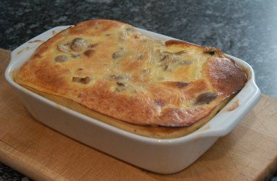

| Zutaten für 4 Personen: | |
| ca. 200g | Champignons |
| wenig | Salz |
| wenig | Butter |
| wenig | Zitronensaft |
| 1-2 | Eier |
| 1dl | Sauerrahm |
| 100g | Reibkäse |
| etwas | Muskat |
| etwas | Petersilie |
Feuerfeste Form mit Butter einfetten. Ofen auf 200°C vorheizen.
Champignons abtropfen lassen, salzen. Dann in Butter leicht andünsten und mit Zitronensaft beträufeln.
Champignons in die Form hinein geben und darüber Sauce aus Eiern, Sauerrahm, Reibkäse, Salz, Muskat und Petersilie giessen.
Weitere EL Reibkäse darüber streuen. Bei 200°C 10 bis 15 Minuten backen.
Herbert Eigenmann, Code: PLA
Getestet am 17.12.95 von RE. Nicht schlecht aber der künstlichen Zitronensaft war nicht angenehm. Ausserdem mag ich Parmesan nicht speziell. Auszuprobieren mit Raclette Käse. Ich habe als Portion für 1 1 Ei, 2 El Sauerrahm (gehäuft) und 2 Dosen Champignons (300g Füllgewicht) verwendet.
Erneut probiert für das Foto. Ist OK aber hat mehr Beilagencharakter. Habe es mit frischen Champignons gemacht. RE 19.1.2008
@LINKBACK_TAG@ @WAKELOCK@